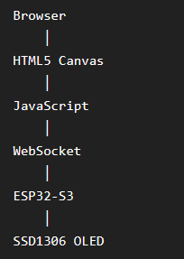
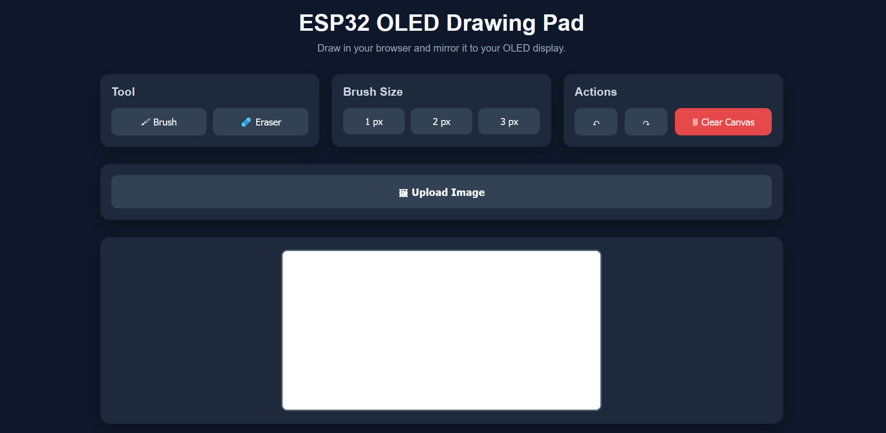
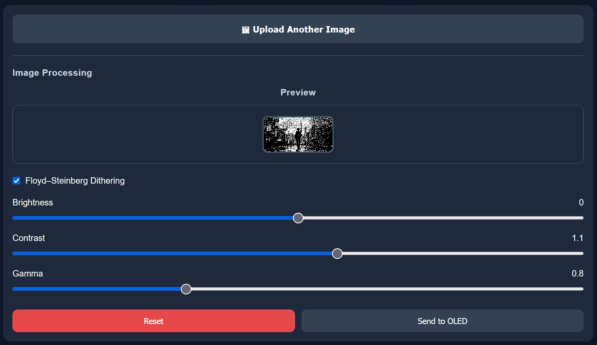
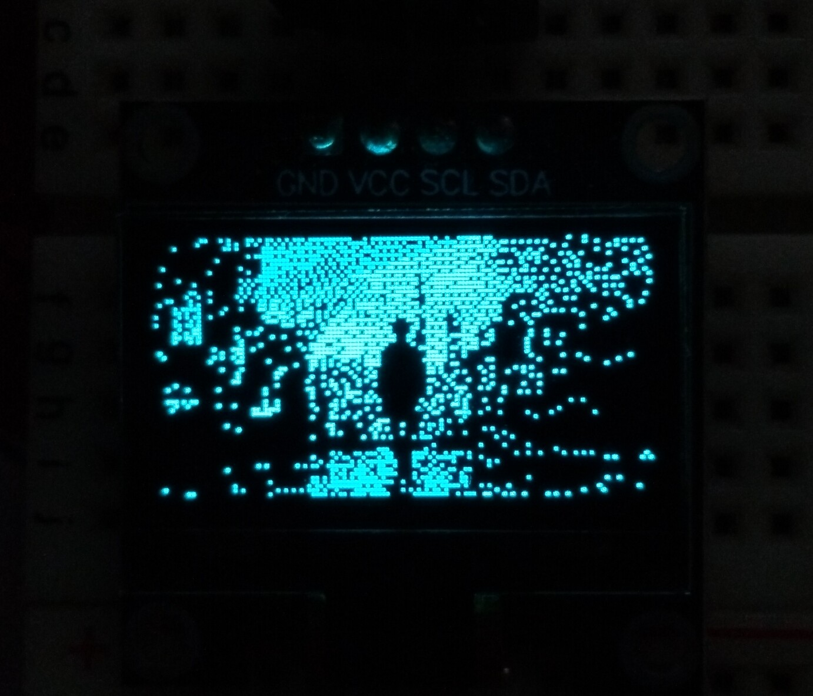

The Idea
I wanted to build a project that combined embedded systems with modern web technologies. Instead of displaying pre-programmed graphics on an OLED, I wanted the display to become an interactive device controlled entirely from a web browser.
The biggest challenge wasn't drawing pixels—it was designing a communication pipeline that felt responsive despite Wi-Fi latency and the limitations of a small monochrome display.
Design & Architecture
The system was split into a browser-based frontend, a WebSocket transport layer, and an ESP32 rendering pipeline.
- Frontend — canvas-based drawing and tool controls
- Transport — low-latency WebSocket message passing
- Device — OLED rendering, buffering, and image processing
Key Design Decisions
- Switched from HTTP polling to WebSockets.
- Stored frontend assets in LittleFS.
- Used HTML5 Canvas as the drawing surface.
- Buffered OLED rendering instead of refreshing every pixel.
- Separated image processing into reusable rendering stages.

Components & BOM
| Component | Qty | Purpose |
|---|---|---|
| ESP32-S3-WROOM-1-N16R8 | 1 | Wi-Fi microcontroller |
| SSD1306 OLED 128×64 | 1 | Primary display for the drawing pad |
| LittleFS | 1 | File system for storing frontend assets |
Build Photos



Code & Technical Details
I used memory buffer instead of refreshing the OLED every time a pixel was drawn. This allowed for smoother rendering and reduced flickering. Also, I implemented Floyd-Steinberg dithering algorithm to convert grayscale images into a format suitable for the monochrome OLED display.
memcpy(
display.getBuffer(),
payload,
1024
);
display.display();
for (let y = 0; y < OLED_HEIGHT; y++) {
for (let x = 0; x < OLED_WIDTH; x++) {
const index = y * OLED_WIDTH + x;
const oldPixel = gray[index];
const newPixel = oldPixel < THRESHOLD ? 0 : 255;
const error = oldPixel - newPixel;
gray[index] = newPixel;
if (x < OLED_WIDTH - 1) gray[index + 1] += (error * 7) / 16;
if (x > 0 && y < OLED_HEIGHT - 1)
gray[index + OLED_WIDTH - 1] += (error * 3) / 16;
if (y < OLED_HEIGHT - 1) gray[index + OLED_WIDTH] += (error * 5) / 16;
if (x < OLED_WIDTH - 1 && y < OLED_HEIGHT - 1)
gray[index + OLED_WIDTH + 1] += (error * 1) / 16;
}
}
Build Log
Failures & Fixes
Final Performance
- Browser → OLED communication: over WebSockets
- Real-time drawing: responsive sketching directly from the browser
- Tools: adjustable brush and eraser
- Rendering: continuous stroke interpolation for smoother motion
- Image workflow: upload and preprocessing for OLED display output
- Image processing: Floyd–Steinberg dithering
- Display controls: brightness, contrast, and gamma adjustments
- Transfer: direct 1024-byte framebuffer transfer
What I Learned
This project taught me far more than OLED programming. It combined frontend development, embedded systems, networking, graphics programming, image processing and performance optimization into a single application. The most valuable lesson was that architecture decisions—such as switching from HTTP to WebSockets—can completely transform the user experience.
What I'd Do Differently
- Differential framebuffer updates
- Collaborative multi-user drawing
- Animation recorder
- Higher-resolution display support
- PNG/GIF playback